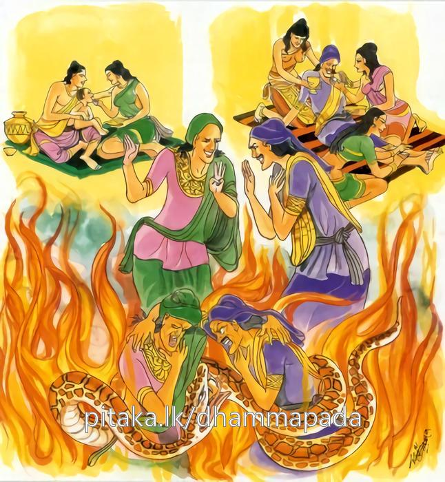

22-1 සුන්දරී පරිව්රාජිකාවගේ මරණය
මෙම කතාව ධම්මපද අටුවාවෙන් ද කියවන්න.
අභූතවාදී නිරයං උපෙති යො වාපි කත්වා න කරොමීති චාහ
උභො’පි තෙ පෙච්ච සමා භවන්ති නිහීනකම්මා මනුජා පරත්ථ.
(පරහට දොස් නැගීම් වසයෙන්) බොරු කියන පුද්ගල තෙම නිරයට යන්නේ ය. තව ද යමෙක් පව් කොට ‘නො කෙළෙමි’යි කියා නම්, හේ ද නිරයට යන්නේ ය. පහත් ක්රියා ඇති ඒ මිනිස්සු දෙ දෙන ම මෙයින් මියැ ගොස් පරලොවැ දී (නරකොත්පත්ති හේතුයෙන්) ගති වශයෙන් සම වන්නාහ.

එක් කලෙක අප තිලෝගුරු සම්මා සම්බුදුරජානන් වහන්සේට හා උන්වහන්සේගේ ශ්රාවකසඞ්ඝයා වහන්සේට පස් මහානදියෙහි ගලා බස්නා මහාදිය කඳක් සේ විවිධ ලාභසත්කාරයෝ දසතින් ගලා එන්නට වූහ. එකල්හි අන්තොටු පිරිවැජියෝ ඉර උදාවන කල්හි නො පෙණී යන කදෝපැණියන් සේ මහාජනයා මැද නො පෙණී ගියෝ එක් තැනෙක රැස් ව “ශ්රමණගෞතමයා උපන් දා පටන් අපි නැසී ගිය ලාභසත්කාර ඇතියමෝ වම්හ, කිසිවෙකුත් අප ඇති බව ද නො දන්නේ ය, එහෙයින් කවරක්හුගේ වහළින් මොහුට අයසක් උපදවමු ද, මොහුට ලැබෙන ලාභසත්කාර කෙසේ වළකා ලමු දැ”යි සාකච්ඡා කළහ. මෙසේ සාකච්ඡාවට බට මොවුනට සුන්දරියගේ වහළින් මෙය කට හැකි ය,යි සිත් විය.
මේ අතර දවසෙක සුන්දරිය උන් වෙත ගොස් වැඳ සිටියා ය. එහෙත් අන්තොටුවෝ ඇය හා කිසිත් නො බැණ නිහඬ ව සිටියහ. ඕ නැවැත නැවැතත් වැඳ සිටියා වචනමාත්රයකුත් නො ලැබුනු බැවින් “ස්වාමීනි! කිම, ඔබවහන්සේලා කිසිවකු විසින් පෙළන ලදහු දැ”යි ඇසූ ය. “බුහුන! අප පෙළා අප කන බත උදුරා කන අපට ලැබෙන හැම ලාභසත්කාර පැහැර ගෙණ සිටින ශ්රමණ ගෞතම තිට නො පැණේ දැ”යි ඇසූ කල්හි “මා විසින් මෙහිලා කුමක් කළ යුතු දැ?”යි ඕ ඇසූ ය. එකල්හි ඔවුහු “බුහුන! තී මනාරූ ඇතියා දුටුවන් සිත් ගන්නිහි, මනා යොවුන්බැව් ඇතියා වෙහි, එහෙයින් තිට ශ්රමණ ගෞතමයා හට පහර ගසනු හැකි ය, අයසක් ඉපදවිය හැකි ය, තී කියනු ලබන්න මහජනයා පිළිගණු ඇත, ඒ නිසා ගෞතමයාහට අයසක් උපදවා එය මහාජනයාට ගන්වා ඌ පිරිහුන ලාභසත්කාර ඇතියකු කරව”යි කීහ. ඕ ද “යහපතැ”යි එබස් අසා එතැන් පටන් මල් ගඳවිලවුන් කපුරු තකුල් ලමඟ ආදිය ගෙණ සවස මහාජනයා දෙව්රමට ගොස් බණ අසා පෙරළා එන වේලාව බලා ඔවුනට පෙණෙන සේ අඳුරු වැටී එත්, දෙව්රමට මූණ දී යන්නී ය. කවරකු හෝ “කොහි යෙහි දැ”යි ඇය විචාළොත් “මම ශ්රමණ ගෞතම වෙත යමි, ගඳකිළියෙහි නිදන්නට එන්නැ යි ඔහු මට දන්වා ඇත, එහෙයින් ඔහු හා එක් ව ගඳකිළියෙහි නිදන්නට යමි”යි කියා ගොස් අන්තොටු අරමකට වැද නිදා හිඳ පාන් වන්නට කලින් දෙව්රමට යන මගට බැස නුවර බලා යන්නී ය. “සුන්දරි! කොහි ගියා දැ?”යි කවරකු විසින් හෝ අසන ලද්දී නම් “මම දෙව්රමට ගියෙමි, ශ්රමණ ගෞතමයා හා අඹුසැමියන් සේ ගඳකිළියෙහි නිදා හිඳ උන් නලවා එමි”යි කියන්නී ය. කිහිප දවසක් සුන්දරිය මෙසේ කරත්, කියත් අන්තොටුවෝ මුදල් දී නුවරවැසි බේබද්දන් පොළොඹා සුන්දරිය මරා මළකුණ ගෞතමයාගේ ගඳකිළිය සමීපයෙහි මල් කසළ හස්සේ සඟවා තබවු යි කියා බේබද්දන් යැවූහ. ඔවුහු දවසෙක මග රැක සිට සුන්දරිය අල්ලා මරා මල්කසළ හස්සේ සඟවා තබා ගියහ. එයින් කිහිප දවසක් ගිය තැන අන්තොටුවෝ “කිහිප දවසක සිට සුන්දරිය දක්නට නැතැ”යි රජුට දන්වාලූහ. රජු “සුන්දරියගේ මේ අතුරුදහන්වීම ගැණ සැක උපදවත් දැ”යි විචාළ විට මේ දවස්හි රාත්රිකාලයෙහි සුන්දරිය වාසය කළා දෙව්රමෙහි ය, ඉන් පසු මෑ ආගිය අතක් දැන ගන්නට නැත, මෑ දුටුවෙක් ද නැතැ”යි අන්තොටුවෝ කියා සිටියහ. එවිට රජ තෙමේ “සුන්දරිය සොයවු”යි නිලධරයනට නියම කෙළේ ය. අන්තොටුවෝ ද සුන්දරිය සෙවීමෙහි උත්සාහවත් ව සිය පිරිස් සමග දෙව්රමට ගොස් තැන තැන සොයා යන්නෝ මල් කසළ අවුස්සා “මෙන්න මළකඳ”යි සඟවා තුබූ මළකුණ ගෙණ ඇඳක තබා නුවර මැදට ගෙණ අවුත් “ගෞතමගේ වල්කම් පව්කම් වසා ගන්නට ඔහුගේ ශ්රාවකයෝ සුන්දරිය මරාමල් කසළ හස්සේ සඟවා තැබූහ”යි රජුට දන්වා යැවූහ. එවිට රජ තෙමේ “එසේ නම් එ බව නුවර වැස්සන්ට දන්වාලවු”යි දන්වා යැවී ය. ඔවුහු “බලවු, ශ්රමණ ශාක්ය පුත්රයන්ගේ ජඩකම්”යි නුවර මංමාවත්හි සෑම තැන ඇවිද නැවැත රජගෙදරට ගියහ. රජ තෙමේ සුන්දරියගේ මළකඳ අමුසොහොනෙහි මැස්සක තබ්බවා රැකවල් කර වීය. ආර්ය්යශ්රාවකයන් හැර සැවැත් නුවර වැසි සෙසු දෙන “ශ්රමණ ශාක්ය පුත්ර ය යි කියා ගන්නා මුන්ගේ වැඩවල හැටි, බලවු, අනුන් දෙන බත් කා මුන් කරණ වැඩ, මුන් කරණ නොහොබිනා වැඩ සල්ලාලයෝ බේබද්දෝ නො කරත්” යි කිමින් නුවර ඇතුළත පිටත වසන භික්ෂූන්ට ඇණුම් බැණුම් කරමින් හැසිරෙන්නට වූහ. භික්ෂූන් මෙ පුවත අසා බුදුරජුන් වෙත ගොස් දන්වා සිටි කල්හි “මහණෙනි! එසේ නම් බැණ ඇවිදින මිනිසුන්ට තමුසේලා මෙසේ කියවු”යි වදාරා මේ ධර්මදේශනාව කළ සේක.
අභූතවාදී නිරයං උපෙති
යො චාපි කත්වා න කරොමීති චාහ,
උභොපි තෙ පෙච්ච සමා භවන්ති
නිහීනකම්මා මනුජා පරත්ථාති.
බොරු කියනසුලු පුද්ගල තෙමේ ද නැවැත යමෙක් (පව්කම්) කොට නො කෙළෙමි යි කියා ද (හෙතෙමේ ද) නිරයට පැමිණෙයි. ලාමක ක්රියා ඇති ඒ මිනිස්සු දෙදෙන ම මෙයින් සැව පරලොවදී සම වෙත්.
අභූතවාදී = බොරු කියනසුලු පුද්ගල තෙමේ ද.
නො වූ, නො සිදු වූ දැය, වූ, සිදුවූ දැය හැටියට කියා පාන්නේ අභූතවාදී ය. අනුන්ගේ දොසක් වරදක් නො දැක ම නින්දා අපහාස කිරීමෙහි බලාපොරොත්තුවෙන් නො කියූ නො කළා වූ දැය “කීහ, කළහ” යි කියන්නේ ය. “පරස්ස දොසං අදිස්වාව මුසාවාදං කත්වා තුච්ඡෙන පරං අබ්භාවික්ඛන්තො” යනු අටුවා. [1]
නිරයං උපෙති = නරකයට පැමිණෙයි. නරකයෙහි උපදියි. [2]
යො ච අපි කත්වා න කරොමි ඉති ච ආහ = නැවැත යමෙක් පව්කම් කොට නො කෙළෙමි යි කියා ද.
උභො අපි තෙ පෙච්ච සමා භවන්ති නිහීනකම්මා මනුජා පරත්ථ = ලාමකක්රියා ඇති ඒ මිනිස්සු දෙදෙන ම මෙයින් සැව පරලොව දී සම වෙත්.
බොරු කියනුයේ ද නිරයට යන්නේ ය. පව්කම් කොට නො කෙළෙමි’යි කියනුයේ ද නිරයට යන්නේ ය. පහත් ක්රියා ඇති ඒ මිනිස්සු දෙදෙන ම මිය ගොස් පරලොව දී ගති වශයෙන් සම වන්නාහ. ඔවුහු දෙදෙන නිරයෙහි ඉපැදීමෙන් ගති වශයෙන් සමාන වූවාහු ද විපාක වින්ද යුතු කාල වශයෙන් නම් සමාන නො වෙත්. පව්කම් බොහෝ කොට බොහෝ කලක් ද පව්කම් මද වශයෙක් කොට මද කලක් ද නිරයෙහි පැසිය යුතු බැවිනි. විපාක කාල වශයෙන් ඔවුන් සමාන නො වන්නේ ය. “තෙ උභොපි ජනා පරලොකං ගනත්වා නිරයං උපගමනෙන ගතියා සමා භවන්ති ගතියෙව තෙසං පරිච්ඡින්නා. ආයු පන තෙසං න පරිච්ඡින්නං. බහුං හි පාපකම්මං කත්වා චිරං නිරයෙ පච්චන්ති. පරිත්තං කත්වා අප්පකමෙව කාලං. යස්මා තෙසං උභින්නම්පි ලාමක මෙවකම්මං. පෙච්ච පරත්ථ ච ඉතො ගන්ත්වා තෙ නිහීන කම්මා පරලොකෙ සමා භවන්ති” යනු අටුවා.
නිහීනකර්ම ඇතියෝ නම් සතුන් මැරීම් හොරකම් කිරීම් ආදී වූ එලොව මෙලොව දෙක්හි දුක් දෙන පව්කම් කරන්නෝ ය.
ධර්මදේශනාවගේ අවසානයෙහි බොහෝ භික්ෂූහු සෝවන් ඵලාදියට පැමිණියාහු ය. රජ තෙමේ නැවැතත් “සුන්දරිය මරාලූවන් සොයා බැඳ ගෙණ එවු”යි රාජපුරුෂයන් යෙදූයේ ය. රාජ පුරුෂයන් රජ අණපරිදි ඔවුන් සොයා ඇවිදුනා කල්හි සුන්දරිය මැරීමට මුදල් ගත් බේබද්දෝ ඒ මුදලින් මත්පැන් බී උනුන් අරගල කරන්නට වූහ. එකෙක් එකක්හට “තෝ එක්පහරින් ම සුන්දරිය මරා මළකුණ මල්කසළ හස්සේ සඟවා එයට ලැබුනු කුලියෙන් මත් පැන් බී අරගල කරන්නෙහි, අල්ලස් ගෙණ මිනී මරන්නෙහි, තට එය අරුමයෙක් නො වේ”යි හඬ නගා කියන්නට වූයේ ය. රාජපුරුෂයෝ උන් අල්ලා බැඳ ගෙණ ගොස් රජුට දැක් වූහ. “සුන්දරිය මැරූවෝ තෙපි දැ?”යි ඇසූ කල්හි “දේවයන් වහන්ස! එසේ ය”යි කීහ. “කවරක්හුගේ බසට දැ?”යි ඇසූ කල්හි “දේවයන් වහන්ස! අන්තොටුවන්ගේ බසටැ”යි කීහ. එවිට රජ තෙමේ අන්තොටුවන් ගෙන්වා “තෙපි නුවර සෑම තැන ගොස් ශ්රමණගෞතම හට නින්දා පරිභව උපදවනු කැමැති ව අප විසින් සුන්දරිය මරවන ලද්දී ය, මෙහිලා ශ්රමණ ගෞතම අතවත් ඔහුගේ ශ්රාවකයන් අතවත් දොසෙක් නැතැ”යි කියාලවු”යි නියම කෙළේ ය. අන්තොටුවෝ එසේ කියමින් නුවර මුළුල්ලෙහි හැසුරුණාහ. කියාලූ දෙයක් පිළිගන්නෝ එද පිළිගත්හ. අන්තොටුවෝ මරණදඬුවම් ලැබූහ. බුදුරජානන් වහන්සේට ලැබුනු ලාභ සත්කාරයෝ වඩාත් මහත් ව ගියහ.
සුන්දරීපරාව්රාජිකා වස්තුව නිමි.